Resume
My professional journey, organizational experiences, education, and technical skills.
Work Experience
Download CVRice Disease Classification Using MobileNetV2 Architecture
Machine Learning for Thesis.
Kabupaten Bekasi

Developed and evaluated a Machine Learning-based classification system for rice plant diseases to optimize agricultural diagnostics.
- Developed a Computer Vision model utilizing CNN and MobileNetV2 architecture with transfer learning to classify rice leaf diseases across 4 distinct classes.
- Processed and engineered a dataset of 4,000+ image samples, achieving a 95% classification accuracy during model validation using real-world field data.
- Integrated the trained deep learning model into an interactive Streamlit web application to enable efficient, real-time user evaluations.
Web Systems Developer
PT Kalbe Farma Tbk.
Cikarang, Bekasi
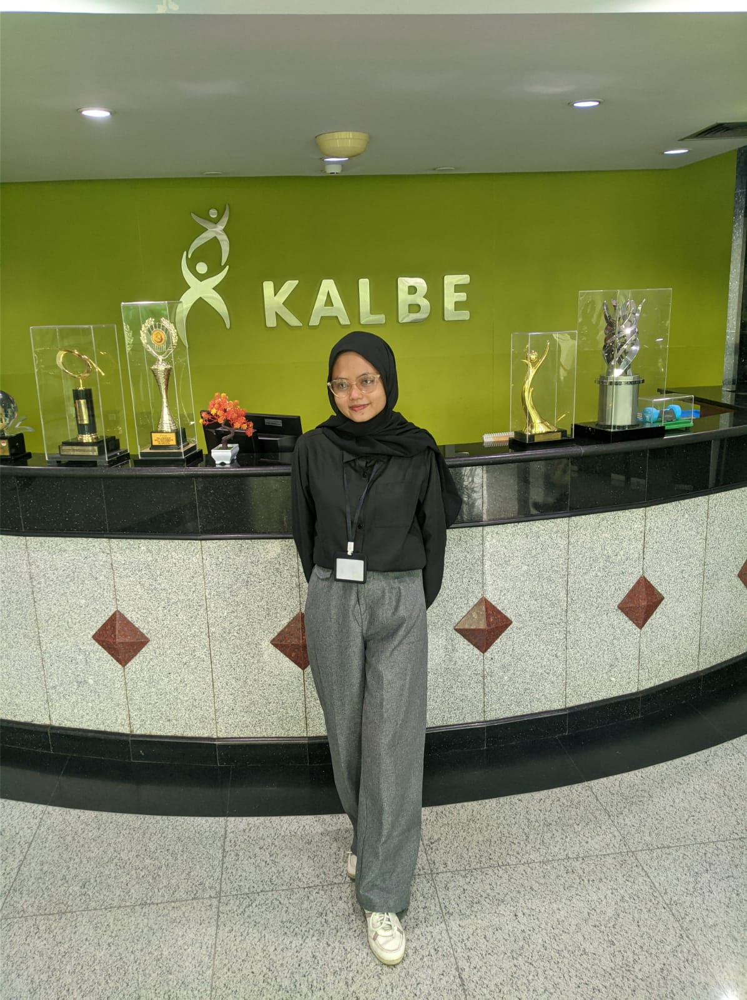
Developed and managed internal digital administration systems to optimize operational processes within the Human Capital division.
- Developed and maintained 3 internal corporate web applications leveraging the Laravel framework to streamline business operations.
- Diagnosed, debugged, and optimized system performance, significantly reducing latency and ensuring high platform stability.
- Revamped UI/UX components based on user feedback to enhance accessibility and overall user engagement.
- Facilitated seamless data integration by connecting front-end interfaces with internal RESTful APIs.
Freelance PIC Event
Playdate By RF
Bekasi, Indonesia
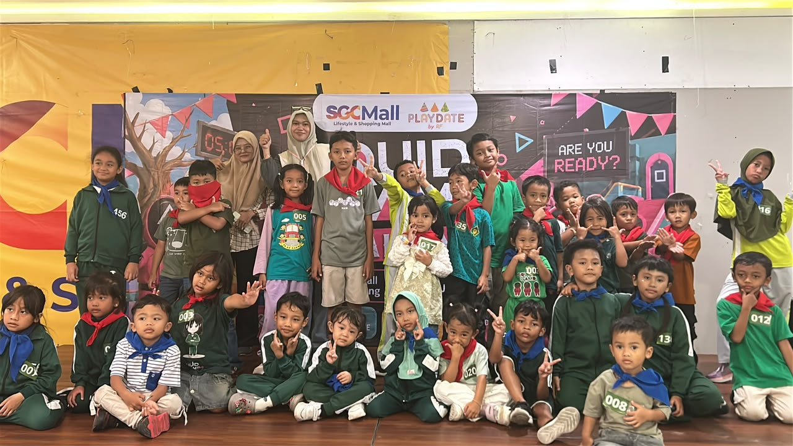
Coordinated and executed educational study tours (C-Taditur) to deliver engaging and secure outdoor learning experiences for children.
- Successfully managed the operations and logistics for 20+ large-scale events during peak school holiday seasons.
- Led groups of 30+ children per event, ensuring absolute safety, active engagement, and seamless itinerary execution at institutional venues such as Fire Stations, Police Departments, and Railway Stations.
- Handled high-level B2B negotiations and secured formal collaboration agreements with institutional authorities to establish official tour locations.
Organizational Experience
Treasurer of the Ministry of Research and Science
Badan Eksekutif Mahasiswa (BEM)
Universitas Singaperbangsa Karawang
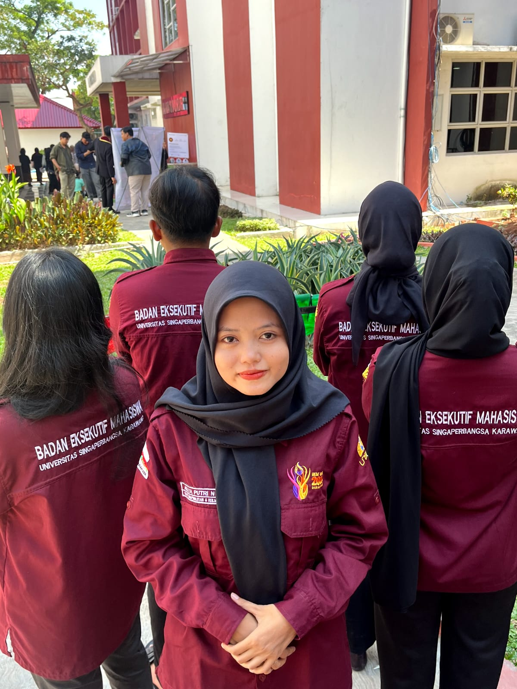
- Formulated and managed the annual budget plan (RAB) for ministry programs, coordinating directly with the General Treasurer of BEM for fund approval and allocation.
- Managed precise financial administration and drafted comprehensive accountability reports (LPJ) to ensure absolute transparency across all ministry expenditures.
- Contributed actively to the planning and execution of core ministry work plans, including national seminars, workshops, and scientific research events.
Event Division
PKKMB Universitas Singaperbangsa Karawang
Panitia Kampus
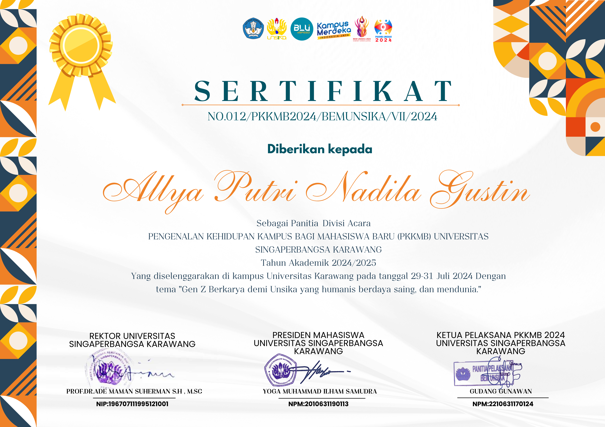
- Designed the core concept, detailed rundowns, and technical execution plans for a university-wide orientation event welcoming over 4,000+ freshman students.
- Led and moderated the pre-orientation socialization sessions, effectively guiding new students through university regulations, event requirements, and preparation procedures.
- Coordinated cross-functional committees and on-field execution to ensure smooth transition times, crowd control, and strict adherence to the event timeline.
Head of Organizing Committee
Seminar Nasional Karya Tulis Ilmiah
Panitia Nasional
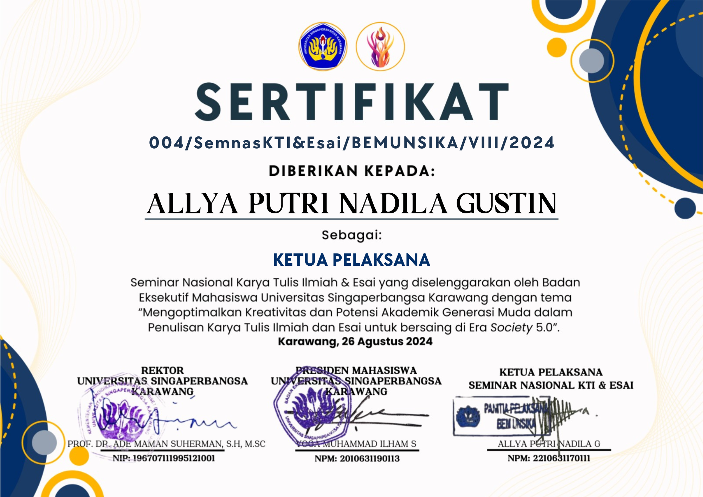
- Led a committee of 40 members to plan and execute a National Scientific Writing Seminar, successfully managing over 700 participants.
- Directed core strategic meetings and supervised task delegation across all divisions to ensure operations aligned with established objectives.
- Served as the primary liaison for stakeholders, successfully securing 10+ corporate sponsors and 10+ media partners while delivering swift on-site problem solving.
Treasurer of Research & Development Division
Himpunan Mahasiswa Informatika (HIMATIKA)
Universitas Singaperbangsa Karawang
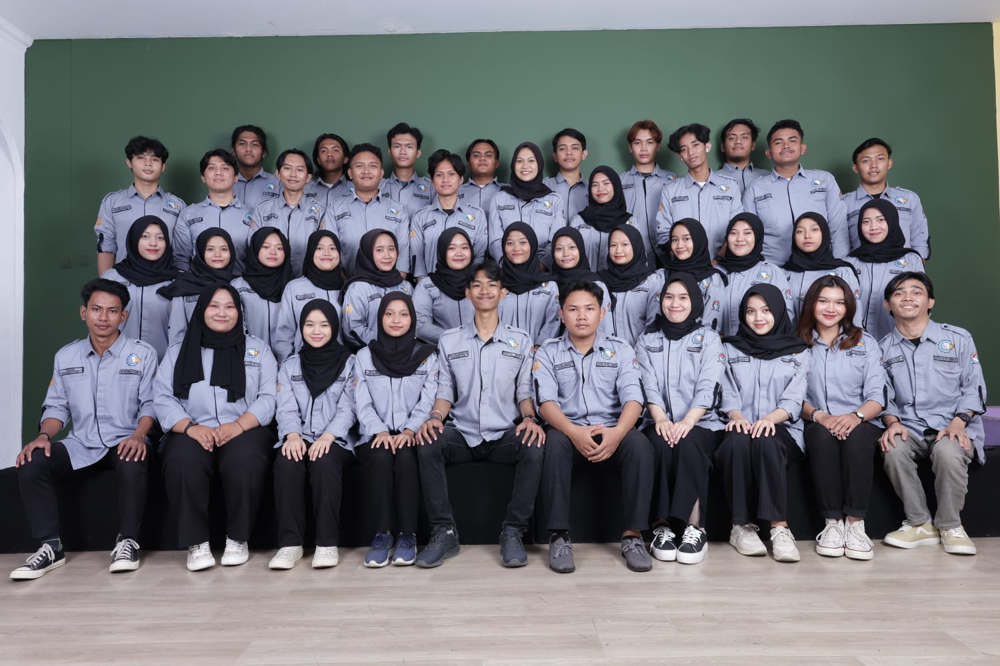
- Managed the division’s internal budget allocation and generated precise financial reports to maintain transparency in all R&D operations.
- Conducted comprehensive research for organizational product development, focusing on enhancing features, functionality, and user experience (UX) for websites and applications.
- Analyzed technical requirements and proposed innovative features to optimize the overall performance and usability of digital products.
Treasurer
SHARE – IT
Kepanitiaan IoT Proyek
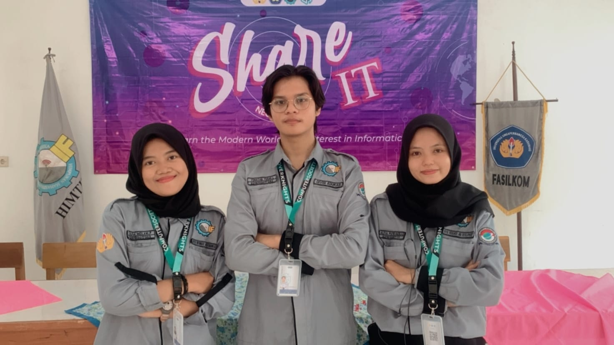
- Formulated the Budget Plan (RAB) and managed a total fund of IDR 5,000,000+ for an IoT-based cigarette smoke detection project.
- Controlled and distributed project funds efficiently to support the operational needs of 35 committee members and 50+ participants.
- Developed comprehensive financial accountability reports (LPJ) to ensure absolute transparency and precise expenditure tracking.
Education
Bachelor of Computer Science in Informatics
Universitas Singaperbangsa Karawang
Karawang, Indonesia
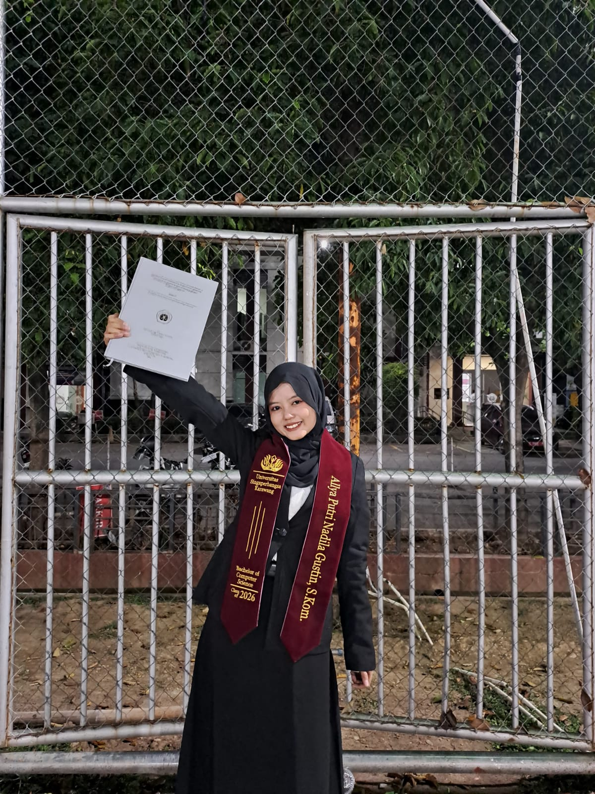
Academic focus on Artificial Intelligence implementation for agricultural optimization and Internet of Things (IoT) systems automation.
- Thesis Research: Classification of rice plant diseases (Bacterial Leaf Blight & Leaf Blast) utilizing the MobileNetV2 architecture with Transfer Learning in Karangraharja Village.
- Applied structured data processing pipelines and post-split data augmentation techniques to prevent data leakage and ensure robust training validity.
- Relevant Coursework: Artificial Intelligence, Machine Learning, Web-Based Programming, Laravel Framework, Data Mining, Object-Oriented Analysis & Design, Business Intelligence, Big Data.
Natural Sciences (IPA)
SMA Negeri 1 Panggul
Trenggalek, Indonesia
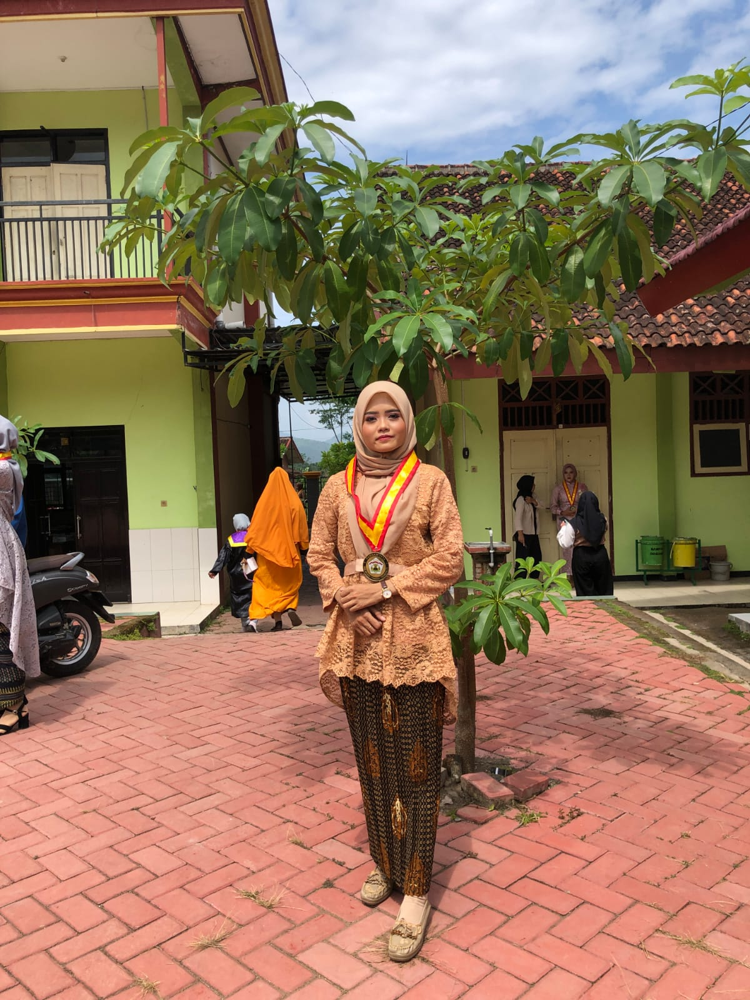
Focused on foundational core sciences, mathematical logic, and analytical problem-solving to build a strong basis for higher computing education.
Technical Skills
Languages & Databases
Frameworks & Libraries
Tools & Design
Awards & Certifications
Competitions & Awards
1st Place Winner - National Scientific Writing Competition
2024IESTF | Developed an IoT-based industrial automation system for Autonomous Guided Vehicles (AGV) designed for factory material handling.
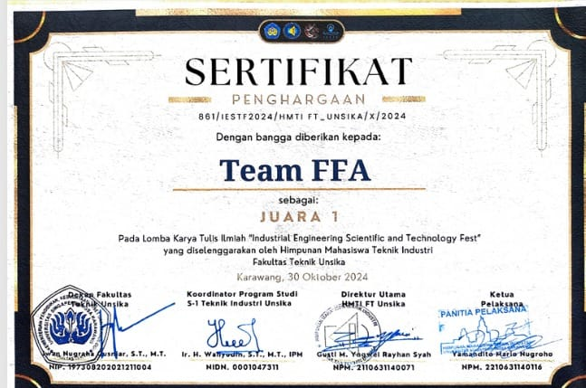
1st Place Winner - National Scientific Writing Competition
2025SPECTRA | Designed an IoT-based automation system that recycles waste cooking oil into eco-friendly soap using smart monitoring sensors.
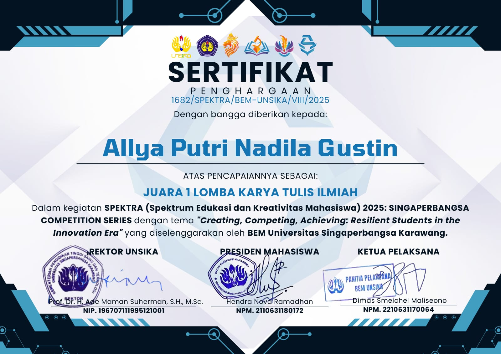
1st Place Winner - University-Level Scientific Writing
2025AGROTECH | Engineered an innovative automated agricultural technology system to optimize crop management and sustainable farming.
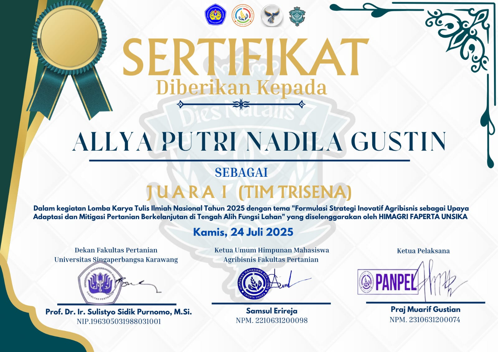
Professional Certifications
Junior Web Developer
BNSP (Badan Nasional Sertifikasi Profesi)
Okt 2023 - Okt 2026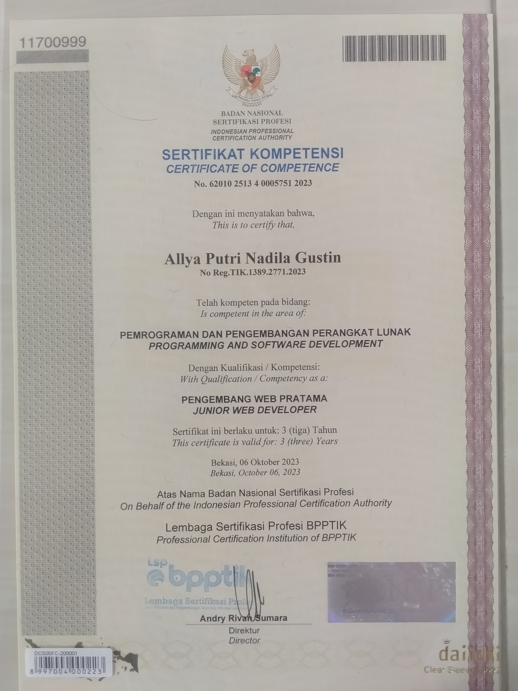
Junior Graphic Designer
BNSP (Badan Nasional Sertifikasi Profesi)
Okt 2023 - Okt 2026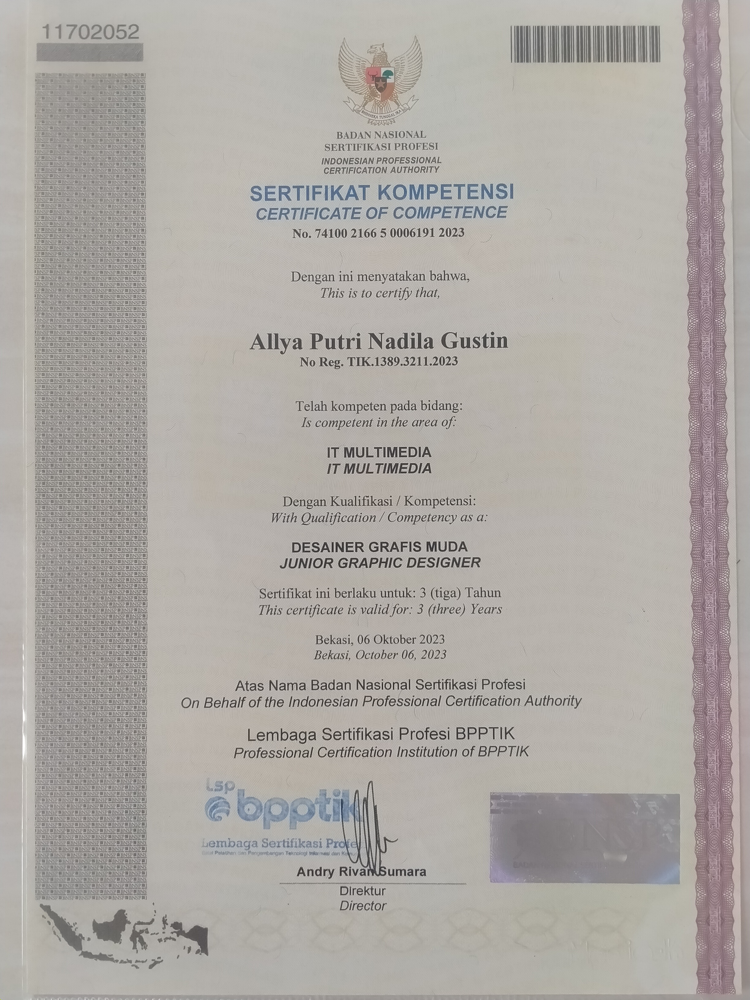